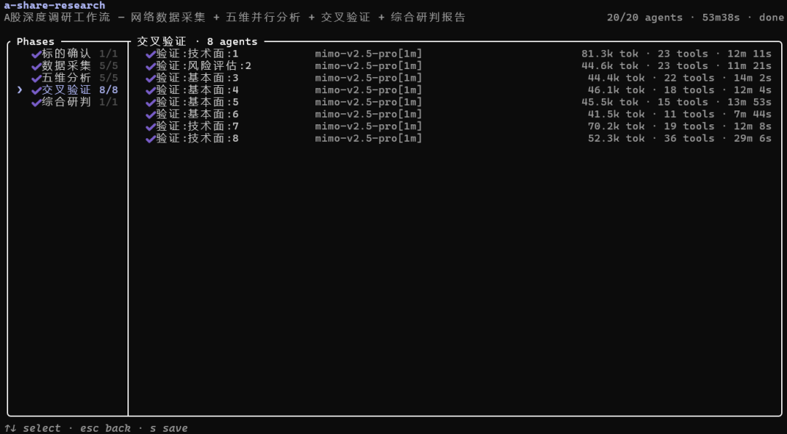
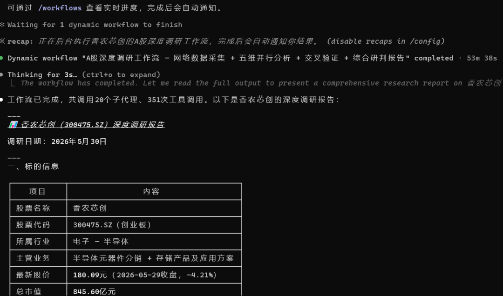
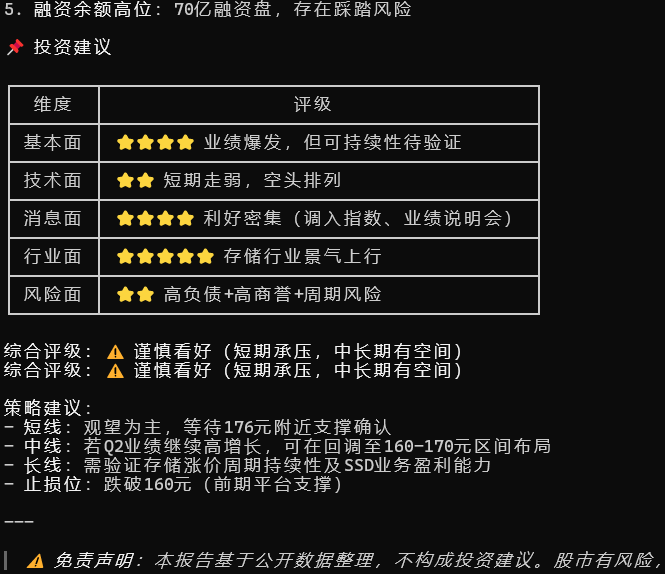

Dynamic Workflow(动态工作流) 是 Claude Code 提供的一种脚本化多 Agent 编排机制。它允许你用纯 JavaScript 编写一个工作流脚本，定义 Agent 之间的执行顺序、数据传递和控制逻辑，然后由运行时在后台自动执行，同时你的会话保持响应。但工作流成本很高，会启动几十上百个 Agent，跑一次可能会消耗几百、几千万 Token。
本文将通过：什么是动态工作流、如何使用、基本语法、A股调研工作流等这么几个阶段带你了解熟悉动态工作流。

普通对话：一次只能跟一个 Agent 交互，Claude Code 逐轮决定做什么
Dynamic Workflow：你把编排逻辑写成脚本，运行时执行脚本，中间结果留在脚本变量里，Claude Code 的上下文只持有最终答案
核心区别在于：谁掌握计划？ 子Agent和 Skills 由 Claude Code 逐轮决定接下来做什么；工作流把计划移入代码，由脚本决定。
1 为什么需要它？
子Agent和 Skills 的局限
当你让 Claude 用subagents处理大任务时，它可能会：
1. 上下文窗口被中间结果填满，忘记前面的分析
2. 每次运行的编排流程不一致，结果不可重复
3. 遇到循环逻辑（"找到 bug → 修复 → 再找"）时难以自动迭代
subagents — Claude 生成的工作者
▸ 谁决定：Claude，逐轮
▸ 中间结果：上下文窗口
▸ 可重复：工作者定义
▸ 规模：每轮几个
▸ 中断：重启轮次
工作流 — 运行时执行的脚本
▸ 谁决定：脚本
▸ 中间结果：脚本变量
▸ 可重复：编排本身
▸ 规模：数十到数百个Agent
▸ 中断：同一会话可恢复
把计划移入代码，还让工作流可以应用可重复的质量模式——比如让独立Agent在报告之前对彼此的发现进行对抗性审查，或从多个角度起草计划并相互权衡，获得比单次通过更可信的结果。
2 快速上手
方式一：在提示中说"workflow"
在你的提示中包含单词 workflow，Claude Code 就会为任务编写工作流脚本，而不是逐轮处理：
运行一个 workflow 测试并修复当前应用
Claude Code 会在你的输入中高亮 workflow 这个词，然后自动编写脚本并启动运行。
小贴士：如果不小心触发了，按
Alt+W为此提示忽略它。要完全关闭关键字触发，在/config中关闭 "Dynamic workflows"。
方式二：使用 Ultracode
Ultracode 结合了 xhigh 推理努力与自动工作流编排。启用后，Claude Code 为每个实质性任务自动规划工作流：
/effort ultracode
启用后，单个请求可能变成一系列工作流：一个理解代码，一个进行更改，一个验证它。Ultracode 只在当前会话生效，新会话会重置。返回日常工作用 /effort high。
方式三：运行内置工作流
Claude Code 内置了 /deep-research 工作流，一行命令启动：
/deep-research 研究下海南自贸港的优势与机会
它会自动完成多角度搜索 → 提取声明 → 对抗性验证 → 综合报告的完整研究流程。
方式四：让 Claude 直接编写自定义工作流
你也可以直接描述工作流任务，让 Claude 编写一个完整的工作流脚本。脚本写好后，工作流在未来会话中从任一位置作为 /
批准与权限
工作流启动前，Claude Code 会显示计划的阶段和选项：
- Yes, run it ：启动运行
- Yes, and don’t ask again for <name> in <path>：启动，并跳过此项目中此工作流的后续提示
- View raw scrip ：在决定前读取脚本
- 否：取消
不同权限模式的行为：
- Default / accept edits：每次运行（除非选了"不再询问"）
- Auto：仅首次启动，之后记住同意
- Bypass permissions / `claude -p`：从不提示，立即启动
注意：工作流中的子Agent始终在
acceptEdits模式下运行，文件编辑自动批准。Shell 命令和网络请求仍可能提示你。
3 核心 API 详解
工作流脚本是一个 JavaScript 文件，必须导出 meta 对象。脚本体内可以直接使用以下全局函数，无需 import。
meta —— 工作流元数据
exportconst meta = {
name: 'code-review',
description: '多维度代码审查工作流',
phases: [
{ title: 'Review', detail: '并行审查多个维度' },
{ title: 'Verify', detail: '验证每个发现' },
],
}
meta 必须是纯字面量——不能有变量、函数调用或模板插值。
phase(title) —— 阶段分组
phase('准备')
// ... 所有 agent 归入"准备"阶段
phase('执行')
// ... 所有 agent 归入"执行"阶段
阶段在进度显示中作为分组框，帮助你一眼看清工作流进展到哪一步。phase() 调用的标题应该和 meta.phases 中的 title 一致。
agent(prompt, opts) —— 生成子 Agent
这是最核心的函数。每个 agent() 调用会生成一个独立的 Agent 实例：
const result = awaitagent(
'你的任务描述...',
{
label: '显示名称', // 在进度树中显示
phase: '阶段名', // 归入哪个阶段
schema: { ... }, // JSON Schema，强制返回结构化数据
model: 'haiku', // 可选：haiku / sonnet / opus
isolation: 'worktree', // 可选：在独立 Git 分支中运行
agentType: 'code-reviewer', // 可选：使用自定义 Agent 类型
}
)
关键点：
- schema 参数让 Agent 必须返回符合 Schema 的 JSON，运行时自动校验，不需要你手动解析文本
- 没有 schema 时，返回 Agent 的最终文本
- model 可以为不同阶段路由不同模型，控制成本
- isolation: worktree 让 Agent 在独立 Git 分支中工作，适合并行修改文件的场景
pipeline(items, ...stages) —— 流水线
const results = awaitpipeline(
['auth.ts', 'db.ts', 'api.ts'], // 要处理的项目列表
// Stage 1: 实现
(prevResult, file, index) =>agent(`实现 ${file} 的功能`, { phase: 'Implement' }),
// Stage 2: 测试
(prevResult, file, index) =>agent(`为 ${file} 写测试`, { phase: 'Test' }),
// Stage 3: 审查
(prevResult, file, index) =>agent(`审查 ${file} 的代码质量`, { phase: 'Review' })
)
流水线的魔力：auth.ts 在做测试时，db.ts 可能还在实现。各项目独立推进，总耗时 = 最慢单项的耗时，而不是所有阶段耗时之和。
这是多阶段工作的默认选择。每个阶段回调接收 (prevResult, originalItem, index) 三个参数。
parallel(thunks) —— 并行屏障
const [security, perf, style] = awaitparallel([
() =>agent('安全审查', { phase: 'Review' }),
() =>agent('性能审查', { phase: 'Review' }),
() =>agent('风格审查', { phase: 'Review' }),
])
// 三个同时跑，全部完成后才继续
什么时候用 barrier vs pipeline？
- parallel：需要所有结果一起才能进行下一步（如汇总、去重）
- pipeline：各项独立，不需要交叉上下文
一个失败的 thunk 不会拒绝整个调用——它在结果数组中变为 null，使用前记得 .filter(Boolean)。
log(message) —— 进度输出
log(`已完成 ${count}/10 个文件`)
显示在进度树上方，给用户实时反馈。
args —— 调用参数
调用者传入的参数在脚本中通过全局变量 args 访问：
// 脚本中
const feature = args?.feature || 'unknown'
// 调用时
Workflow({ name: 'feature-impl', args: { feature: '用户认证' } })
传数组/对象时用实际 JSON 值，不要用 JSON 字符串。
budget —— 预算控制
当用户指定了 Token 预算时（如 "+500k"），脚本可以动态调整工作深度：
const findings = []
while (budget.total && budget.remaining() > 50_000) {
const result = awaitagent('深入分析下一个模块', { schema: ANALYSIS_SCHEMA })
findings.push(...result.items)
log(`${findings.length} items, ${Math.round(budget.remaining()/1000)}k remaining`)
}
budget.total 为 null 时 remaining() 返回 Infinity，不限制循环。
4 实战模式
模式 1：对抗性验证（Adversarial Verify）
防止"看似正确实则错误"的发现存活。每个发现让 N 个独立 Agent 尝试反驳，多数反驳成功则剔除：
// 每个发现让 3 个独立 Agent 尝试反驳
const votes = awaitparallel([
() =>agent(`尝试反驳：${claim}。默认 refuted=true 如果不确定。`, { schema: VERDICT }),
() =>agent(`尝试反驳：${claim}。默认 refuted=true 如果不确定。`, { schema: VERDICT }),
() =>agent(`尝试反驳：${claim}。默认 refuted=true 如果不确定。`, { schema: VERDICT }),
])
// 2/3 以上认为无法反驳，才保留
const survives = votes.filter(Boolean).filter(v => !v.refuted).length >= 2
模式 2：循环直到达标（Loop-until-dry）
适用于不确定需要多少轮的探索性任务：
const bugs = []
const seen = newSet()
let consecutiveEmpty = 0
while (consecutiveEmpty < 2) {
const result = awaitagent('找出代码中的 bug', { schema: BUGS_SCHEMA })
const newBugs = result.bugs.filter(b => !seen.has(b.id))
if (newBugs.length === 0) {
consecutiveEmpty++
} else {
consecutiveEmpty = 0
bugs.push(...newBugs)
newBugs.forEach(b => seen.add(b.id))
}
log(`已找到 ${bugs.length} 个 bug`)
}
return { bugs }
模式 3：多视角评审（Judge Panel）
从不同角度生成方案，再用评委打分：
// 三个 Agent 从不同角度提方案
const approaches = awaitparallel([
() =>agent('从 MVP 角度设计方案', { phase: 'Design' }),
() =>agent('从安全性角度设计方案', { phase: 'Design' }),
() =>agent('从用户体验角度设计方案', { phase: 'Design' }),
])
// 评委打分
const scores = awaitparallel(
approaches.map(a =>() =>
agent(`评估这个方案：${a.summary}`, {
phase: 'Judge ',
schema: SCORE_SCHEMA,
})
)
)
// 选最高分，融合其他方案的优点
const winner = approaches[scores.indexOf(Math.max(...scores.map(s => s.score)))]
模式 4：多维度扫描（Multi-modal Sweep）
平行搜索不同维度，每个 Agent 看到不同角度：
constDIMENSIONS = [
{ key: 'security', prompt: '审查安全性：SQL 注入、XSS、硬编码密钥' },
{ key: 'performance', prompt: '审查性能：N+1 查询、内存泄漏、不必要的重渲染' },
{ key: 'maintainability', prompt: '审查可维护性：代码重复、过长函数、深层嵌套' },
]
const reviews = awaitparallel(
DIMENSIONS.map(d =>() =>
agent(d.prompt, {
label: `review:${d.key}`,
phase: 'Review',
schema: FINDING_SCHEMA,
})
)
)
模式 5：流水线处理（Pipeline Processing）
多个文件独立经历 实现 → 测试 → 审查 的完整流程：
const results = awaitpipeline(
files,
file =>agent(`实现 ${file}`, { phase: 'Implement' }),
(prev, file) =>agent(`为 ${file} 写测试`, { phase: 'Test' }),
(prev, file) =>agent(`审查 ${file}`, { phase: 'Review' })
)
5 完整示例：Bug 修复工作流
exportconst meta = {
name: 'fix-bugs',
description: '发现并修复代码中的 bug',
phases: [
{ title: 'Discover', detail: '发现 bug' },
{ title: 'Fix', detail: '修复 bug' },
{ title: 'Verify', detail: '验证修复' },
],
}
constBUG_SCHEMA = {
type: 'object',
properties: {
bugs: {
type: 'array',
items: {
type: 'object',
properties: {
id: { type: 'string' },
title: { type: 'string' },
file: { type: 'string' },
line: { type: 'number' },
description: { type: 'string' },
fix: { type: 'string' },
},
required: ['id', 'title', 'file', 'description', 'fix'],
},
},
},
required: ['bugs'],
}
// ── Discover：多角度搜索 bug ──
phase('Discover')
const searches = awaitparallel([
() =>agent(
'从错误处理角度找 bug：未捕获的异常、空指针、类型错误',
{ label: 'search:error-handling', phase: 'Discover', schema: BUG_SCHEMA }
),
() =>agent(
'从并发角度找 bug：竞态条件、死锁、资源泄漏',
{ label: 'search:concurrency', phase: 'Discover', schema: BUG_SCHEMA }
),
() =>agent(
'从逻辑角度找 bug：边界条件、off-by-one、错误的条件判断',
{ label: 'search:logic', phase: 'Discover', schema: BUG_SCHEMA }
),
])
// 去重
const seen = newSet()
const bugs = searches
.filter(Boolean)
.flatMap(r => r.bugs)
.filter(b => {
const key = `${b.file}:${b.line}:${b.title}`
if (seen.has(key)) returnfalse
seen.add(key)
returntrue
})
log(`发现 ${bugs.length} 个唯一 bug`)
// ── Fix：逐个修复 ──
phase('Fix')
const fixes = awaitpipeline(
bugs,
bug =>agent(
`修复以下 bug：\n` +
`文件: ${bug.file}:${bug.line}\n` +
`问题: ${bug.title}\n` +
`描述: ${bug.description}\n` +
`建议修复方案: ${bug.fix}\n\n` +
`请实现修复，然后运行 pnpm typecheck 验证。`,
{ label: `fix:${bug.id}`, phase: 'Fix' }
)
)
// ── Verify：最终验证 ──
phase('Verify')
const verification = awaitagent(
`验证所有 bug 修复：\n` +
`1. 运行 pnpm typecheck\n` +
`2. 运行 pnpm test\n` +
`3. 确认以下文件的修复：${bugs.map(b => b.file).join(', ')}`,
{
label: 'final-verify',
phase: 'Verify',
schema: {
type: 'object',
properties: {
typecheckPassed: { type: 'boolean' },
testsPassed: { type: 'boolean' },
allFixesVerified: { type: 'boolean' },
},
required: ['typecheckPassed', 'testsPassed', 'allFixesVerified'],
},
}
)
return {
bugsFound: bugs.length,
bugsFixed: fixes.filter(Boolean).length,
verification,
}
6 完整案例：A 股深度调研工作流
下面是一个真实可用的自定义工作流——A 股上市公司深度调研。它展示了 parallel + WebSearch/WebFetch + schema + 对抗性验证在金融场景下的完整应用。

文件路径：
.claude/workflows/a-share-research.js
调用方式
/a-share-research 调研XXX股票
工作流架构（5 阶段，含网络检索）
标的确认（1个Agent）
│ ← WebSearch + WebFetch 确认股票代码、行业、股价
↓
数据采集（5个Agent并行网络检索）⬅ 关键阶段
├── 财务数据：搜索财报、ROE、PE/PB → WebFetch 东方财富
├── 行情数据：搜索最新股价、技术指标、资金流向
├── 新闻公告：搜索最新公告、研报、政策
├── 行业数据：搜索行业景气度、竞争对手、市场份额
└── 风险信息：搜索质押、监管处罚、大股东增减持
↓
五维并行分析（5个Agent同时跑）
│ 基于采集数据 + 可补充 WebSearch
├── 基本面：财务指标、估值、机构持仓
├── 技术面：K线、均线、MACD、资金流向
├── 消息面：公告、政策、传闻、催化剂
├── 行业对比：竞争格局、护城河、景气度
└── 风险评估：财务/监管/治理/黑天鹅
↓
交叉验证（最多11个Agent并行）
│ 每个验证 Agent 独立执行 WebSearch + WebFetch
├── 优先验证：低置信度 + 无来源的发现
├── 对高影响力利好：独立搜索反驳
└── 对高影响力利空：独立搜索反驳
↓
综合研判（1个Agent汇总）
→ 投资评级 + 综合评分 + 核心逻辑 + 风险提示 + 数据来源汇总
关键设计亮点
1. 独立数据采集阶段，确保数据有源
与普通分析工作流最大的区别：在分析之前，先用 5 个 Agent 并行采集原始数据。
// 每个采集 Agent 执行 3 次 WebSearch + 多次 WebFetch
const rawDataResults = awaitparallel(
SEARCH_QUERIES.map(sq =>() =>
agent(
`采集【${sq.key}】维度数据...\n` +
`必须执行：\n` +
sq.queries.map((q, i) =>`${i+1}. WebSearch: "${q}"`).join('\n') +
`\n选择权威页面 WebFetch 获取详细数据...`,
{ schema: RAW_DATA_SCHEMA } // 返回 sources[] + rawDataSummary
)
)
)
每个采集 Agent 返回 { sources: [{url, title, keyData}], rawDataSummary }，后续分析 Agent 直接基于这些数据工作，而不是凭记忆编造。
2. Schema 增加数据溯源字段
每个发现都必须标注来源和时效性：
{
findings: [{
title, detail,
sentiment: '利好'|'利空'|'中性',
confidence: '高'|'中'|'低',
source: 'https://...', // 必填，数据来源 URL
dataFreshness: '实时'|'近期'|'历史'|'待验证'// 数据时效
}],
summary, score,
dataQuality: '高'|'中'|'低'// 整体数据质量评估
}
3. 交叉验证使用独立网络搜索
验证 Agent 不是简单地"想想对不对"，而是真正去搜索独立数据源：
// 验证 Agent 的 prompt
`1. WebSearch: "${stockName}${finding.title}" — 获取独立信息源
2. WebSearch: "${stockName} 最新 ${finding.dimension}" — 交叉数据
3. WebFetch: 访问东方财富/巨潮资讯等权威页面
4. 对比独立获取的数据与原始发现是否一致`
验证结果返回 { isReal, reason, verificationSource }——每条结论都有独立来源背书。
4. 三类发现优先验证
// 1. 存疑发现：低置信度 / 无来源 / 时效待验证
const needVerify = allFindings
.filter(f => f.confidence === '低' || !f.source || f.dataFreshness === '待验证')
// 2. 高影响力利好：用怀疑视角验证
// 3. 高影响力利空：用乐观视角验证
运行效果
# XX芯创（XX0475.SZ）深度调研报告
**调研日期：2026年5月30日**
**数据来源：雪球、东方财富、同花顺、新浪财经、巨潮资讯、DRAMeXchange、CFM闪存市场**
## 一、标的信息
........省略1000字.............
## 四、技术面分析
## 六、行业与业务分析
### 行业景气度（2026-05-29数据）
.........省略1000字.............## 附录：数据来源
| 来源 | URL | 数据内容 |
|----- |-----|---------|
| 东方财富 | datacenter.eastmoney.com | 财务数据、行情、融资融券、资金流向、北向资金 |
| 雪球 | xueqiu.com/S/SZ300475 | 行情、估值、基本面 |
| 同花顺 | basic.10jqka.com.cn | 财务数据、公司简介 |
| 新浪财经 | finance.sina.com.cn | 财务摘要、行情 |
| 巨潮资讯 | cninfo.com.cn | 公司公告 |
| DRAMeXchange | dramexchange.com | DRAM/NAND现货价格 |
| CFM闪存市场 | chinaflashmarket.com | Flash Wafer、服务器内存合约价、SSD价格 |
**报告生成时间**：2026-05-30
**工作流版本**：a-share-research v1.0
**子代理调用数**：20个
**工具调用数**：351次

如何定制
- 增加分析维度：在 `DIMENSIONS` 和 `SEARCH_QUERIES` 数组中添加新项
- 改变验证强度：调整各 `.slice(0, N)` 的数量
- 增加数据源：在 `SEARCH_QUERIES[].fetchUrls` 中添加目标页面
- 增加行业特定指标：修改各维度的 prompt 和搜索关键词
- 输出 Markdown 报告：在最终 agent 的 prompt 中要求输出 Markdown
- 对接内部数据库：在数据采集阶段添加 API 调用逻辑
7 内置工作流：Deep Research
Claude Code 内置了 /deep-research 工作流，是体验 Dynamic Workflows 的最快方式。
一行命令启动
/deep-research Claude Code 最新特性与最佳实践
它做了什么？
deep-research 内部包含 5 个阶段：
▸ Scope 分解研究问题为 5 个搜索角度
▸ Search 5 个并行 Agent，每个负责一个角度的 Web 搜索
▸ Fetch 去重 URL，抓取 Top 15 源，提取可验证的声明
▸ Verify 每条声明 3 个 Agent 独立对抗性验证（2/3 反驳成功则剔除）
▸ Synthesize 合并语义重复，按置信度排序，生成引用报告
运行完成后，报告进入你的会话。它引用每个声明来自的来源，未通过交叉检查的声明已被过滤掉。
值得了解？
这个工作流本身就是 Dynamic Workflows 的教科书级示例，它展示了本文介绍的几乎所有核心模式：
- `parallel`：Search 阶段 5 个 Agent 同时搜索
- `pipeline`：Fetch 阶段对每个 URL 独立提取声明
- 对抗性验证：Verify 阶段每条声明 3 个 Agent 独立反驳
- `schema`：每个 Agent 都用 JSON Schema 强制结构化输出
- `log`：实时输出进度（"Found 12 unique sources"）
- 阶段分组**：5 个 `phase()` 清晰划分工作流进度
8 管理运行
查看进度
工作流在后台运行，会话在 Agent 工作时保持响应。随时运行 /workflows 列出运行中和已完成的工作流：
/workflows
进度视图显示每个阶段及其Agent计数、令牌总数和经过的时间。快捷键：
- ↑ / ↓：选择一个阶段或Agent
- Enter 或 →：深入选定的阶段，读取其提示、工具调用和结果
- Esc：返回一个级别
- p：暂停或恢复运行
- x：停止选定的Agent，或停止整个工作流
- r：重启选定的运行中Agent
- s：保存运行的脚本为命令
保存工作流以供重用
当 Claude 为你的重复任务编写了工作流时，可以将脚本保存为命令：
1. 运行 /{workflows_name}`
2. 按 s
3. Tab 切换保存位置：
- .claude/workflows/（项目内，团队共享）
- ~/.claude/workflows/（个人，跨项目可用）
4. 按 Enter 保存
保存后，工作流在未来会话中作为 /<name> 运行，出现在 / 自动补全中。
成本控制
工作流生成许多Agent，单次运行可以比普通对话消耗更多 Token。控制成本的方法：
- 在大型运行前检查 `/model`，确认当前模型
- 为不需要最强模型的阶段指定 `model: 'haiku'`
- 使用 `budget` 对象动态控制循环深度
- 随时从 `/workflows` 停止运行，不会丢失已完成的工作
运行约束
- 无中途用户输入：仅权限提示可以暂停运行
- 脚本本身无文件系统/shell 访问：Agent读写文件和运行命令，脚本只协调Agent
- 最多 16 个并发Agent（CPU核数少会更少）：限制本地资源使用
- 每次运行 1,000 个Agent总数：防止失控循环
关闭工作流
如果不需要工作流功能：
- 在 `/config` 中切换 "Dynamic workflows" 关闭（会话内持续）
- 在 `~/.claude/settings.json` 中设置 `"disableWorkflows": true`
- 设置环境变量 `CLAUDE_CODE_DISABLE_WORKFLOWS=1`
9 版本与可用性
- 最低版本：Claude Code v2.1.154+
- 计划要求：Pro、Max、Team、Enterprise（Pro 需在 `/config` 中手动启用）
- API 支持：Anthropic API、Amazon Bedrock、Google Cloud Vertex AI、Microsoft Foundry
- 当前状态：研究预览阶段
10 总结
当你遇到这样的场景：一个复杂任务需要多个 Agent 分工合作，有的并行审查，有的串行依赖，有的需要循环迭代直到达标。Claude Code 的 Dynamic Workflows 可能是你最好的选择
动态工作流消耗Token是非常多的，但也是 Claude Code 处理复杂任务的利器。它让你能够： 编排多个 Agent：定义清晰的执行顺序和依赖关系
1.并行处理：独立任务同时执行，节省时间
2.结构化输出：JSON Schema 保证数据一致性
3.流水线模式：各项目独立推进，最大化吞吐
4.断点恢复：中断后从上次位置继续
5.预算控制：精确控制 Token 消耗
参考资料
https://code.claude.com/docs/zh-CN/workflows